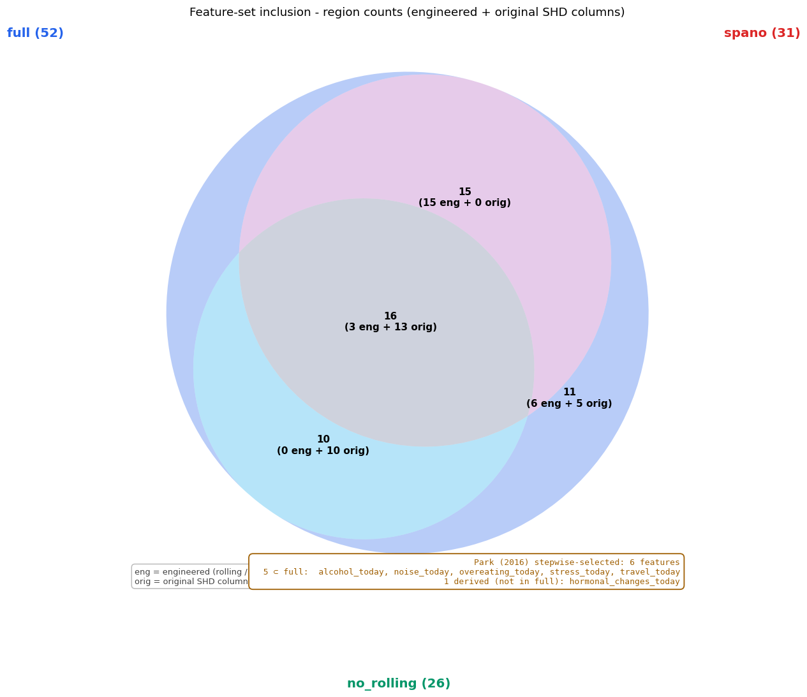
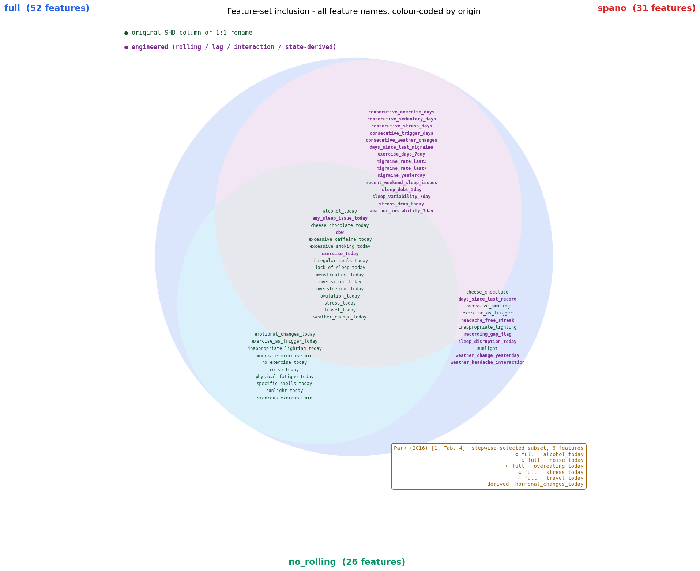
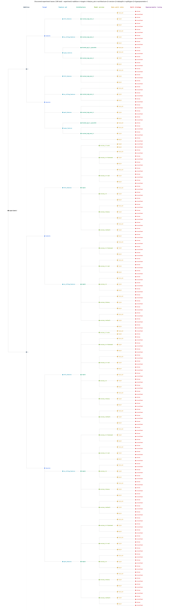

rows ↓ Architecture cols → Data Package | headache | migraine | |||||||||||
|---|---|---|---|---|---|---|---|---|---|---|---|---|---|
| 70_15_15 chrono | 70_15_15 stratified | 70_30 chrono | 70_30 stratified | 80_20 chrono | 80_20 stratified | 70_15_15 chrono | 70_15_15 stratified | 70_30 chrono | 70_30 stratified | 80_20 chrono | 80_20 stratified | ||
| Addition 0 | arch: blended xgb lr spano2026 fs: [spano] | H+CV AUROC0.534[0.394-0.671] AUPRC0.168[0.089-0.264] Brier ↓0.132[0.097-0.171] ECE10 ↓0.078[0.038-0.126] CalSlope0.012[-0.154-0.673] MCC-0.012[-0.116-0.181] Sens≥0.50.262[0.067-0.471] Acc (base!)0.816[0.750-0.875] Prec0.124[0.000-0.417] Recall0.050[0.000-0.167] F10.069[0.000-0.235] | - | - | - | - | - | H+CV AUROC0.558[0.430-0.700] AUPRC0.057[0.019-0.107] Brier ↓0.042[0.018-0.074] ECE10 ↓0.055[0.033-0.088] CalSlope0.270[0.073-0.657] MCC-0.021[-0.044-0.000] Sens≥0.50.000[0.000-0.000] Acc (base!)0.948[0.904-0.978] Prec0.000[0.000-0.000] Recall0.000[0.000-0.000] F10.000[0.000-0.000] | - | - | - | - | - |
| Addition 0 | arch: stacked 2xgb meta lr fs: [full] | H+CV AUROC0.507[0.362-0.643] AUPRC0.189[0.094-0.317] Brier ↓0.129[0.096-0.163] ECE10 ↓0.076[0.031-0.124] CalSlope0.190[-0.831-1.228] MCC0.016[-0.129-0.206] Sens≥0.50.417[0.188-0.643] Acc (base!)0.794[0.728-0.860] Prec0.157[0.000-0.400] Recall0.108[0.000-0.263] F10.124[0.000-0.286] | AUROC0.669[0.618-0.718] AUPRC0.434[0.356-0.510] Brier ↓0.166[0.150-0.181] ECE10 ↓0.043[0.019-0.069] CalSlope1.348[0.941-1.782] MCC0.240[0.164-0.322] Sens≥0.50.579[0.504-0.653] Acc (base!)0.722[0.689-0.755] Prec0.412[0.343-0.483] Recall0.433[0.359-0.509] F10.422[0.359-0.488] | AUROC0.639[0.579-0.703] AUPRC0.383[0.296-0.470] Brier ↓0.148[0.129-0.169] ECE10 ↓0.036[0.016-0.060] CalSlope1.357[0.822-1.928] MCC0.246[0.149-0.345] Sens≥0.50.633[0.545-0.724] Acc (base!)0.780[0.746-0.814] Prec0.421[0.322-0.521] Recall0.338[0.252-0.433] F10.374[0.290-0.460] | AUROC0.662[0.628-0.696] AUPRC0.427[0.377-0.482] Brier ↓0.189[0.172-0.205] ECE10 ↓0.105[0.082-0.126] CalSlope7.891[6.226-9.637] MCC0.200[0.137-0.261] Sens≥0.50.950[0.927-0.971] Acc (base!)0.776[0.753-0.799] Prec0.608[0.493-0.716] Recall0.127[0.091-0.165] F10.210[0.155-0.265] | AUROC0.534[0.411-0.652] AUPRC0.233[0.115-0.360] Brier ↓0.125[0.102-0.150] ECE10 ↓0.095[0.056-0.135] CalSlope0.489[-0.581-1.422] MCC0.068[-0.082-0.220] Sens≥0.50.403[0.229-0.577] Acc (base!)0.821[0.774-0.868] Prec0.216[0.000-0.417] Recall0.124[0.000-0.250] F10.155[0.000-0.290] | AUROC0.679[0.639-0.717] AUPRC0.444[0.383-0.505] Brier ↓0.183[0.166-0.201] ECE10 ↓0.098[0.074-0.124] CalSlope2.964[2.276-3.668] MCC0.244[0.168-0.315] Sens≥0.50.837[0.787-0.883] Acc (base!)0.782[0.757-0.806] Prec0.627[0.509-0.738] Recall0.175[0.128-0.225] F10.272[0.205-0.339] | H+CV AUROC0.610[0.434-0.849] AUPRC0.236[0.018-0.686] Brier ↓0.039[0.015-0.067] ECE10 ↓0.051[0.033-0.074] CalSlope1.894[-0.114-2.284] MCC0.213[-0.035-0.660] Sens≥0.50.190[0.000-0.667] Acc (base!)0.955[0.919-0.985] Prec0.314[0.000-1.000] Recall0.190[0.000-0.667] F10.216[0.000-0.667] | AUROC0.716[0.639-0.788] AUPRC0.225[0.129-0.350] Brier ↓0.062[0.047-0.078] ECE10 ↓0.018[0.006-0.035] CalSlope0.944[0.604-1.307] MCC0.142[-0.020-0.299] Sens≥0.50.470[0.341-0.604] Acc (base!)0.927[0.906-0.947] Prec0.442[0.000-1.000] Recall0.062[0.000-0.145] F10.107[0.000-0.241] | AUROC0.777[0.680-0.855] AUPRC0.320[0.184-0.462] Brier ↓0.057[0.042-0.074] ECE10 ↓0.024[0.008-0.042] CalSlope1.599[1.048-2.182] MCC0.292[0.183-0.396] Sens≥0.50.712[0.561-0.842] Acc (base!)0.842[0.812-0.871] Prec0.227[0.148-0.320] Recall0.581[0.429-0.735] F10.325[0.224-0.428] | AUROC0.682[0.622-0.738] AUPRC0.214[0.144-0.295] Brier ↓0.066[0.053-0.079] ECE10 ↓0.036[0.022-0.052] CalSlope0.781[0.557-1.012] MCC0.216[0.134-0.303] Sens≥0.50.264[0.184-0.354] Acc (base!)0.897[0.880-0.913] Prec0.279[0.193-0.374] Recall0.264[0.184-0.354] F10.270[0.193-0.354] | AUROC0.592[0.382-0.779] AUPRC0.091[0.030-0.195] Brier ↓0.044[0.023-0.068] ECE10 ↓0.031[0.013-0.052] CalSlope0.348[-0.498-1.117] MCC-0.036[-0.054--0.020] Sens≥0.50.193[0.000-0.500] Acc (base!)0.927[0.893-0.957] Prec0.000[0.000-0.000] Recall0.000[0.000-0.000] F10.000[0.000-0.000] | AUROC0.695[0.630-0.759] AUPRC0.212[0.134-0.304] Brier ↓0.065[0.050-0.078] ECE10 ↓0.027[0.012-0.043] CalSlope0.874[0.594-1.193] MCC0.163[0.062-0.273] Sens≥0.50.401[0.287-0.518] Acc (base!)0.906[0.887-0.926] Prec0.264[0.139-0.400] Recall0.170[0.088-0.270] F10.205[0.111-0.308] |
| Addition 0 | arch: stacked 2xgb meta lr fs: [no_rolling] | H+CV AUROC0.518[0.373-0.670] AUPRC0.189[0.098-0.326] Brier ↓0.126[0.095-0.160] ECE10 ↓0.076[0.026-0.127] CalSlope-0.032[-4.082-3.119] MCC0.015[-0.150-0.200] Sens≥0.50.584[0.357-0.824] Acc (base!)0.685[0.610-0.765] Prec0.149[0.036-0.281] Recall0.265[0.071-0.474] F10.188[0.047-0.333] | AUROC0.577[0.528-0.632] AUPRC0.296[0.238-0.352] Brier ↓0.178[0.161-0.194] ECE10 ↓0.018[0.004-0.040] CalSlope1.948[0.600-3.311] MCC0.136[0.058-0.218] Sens≥0.50.594[0.516-0.671] Acc (base!)0.710[0.677-0.743] Prec0.353[0.271-0.440] Recall0.286[0.219-0.357] F10.315[0.249-0.387] | AUROC0.553[0.495-0.617] AUPRC0.246[0.192-0.307] Brier ↓0.156[0.136-0.178] ECE10 ↓0.020[0.004-0.044] CalSlope0.799[-0.371-1.932] MCC0.065[-0.023-0.163] Sens≥0.50.785[0.710-0.861] Acc (base!)0.778[0.743-0.814] Prec0.294[0.154-0.445] Recall0.097[0.050-0.154] F10.145[0.076-0.227] | AUROC0.435[0.397-0.472] AUPRC0.214[0.184-0.242] Brier ↓0.193[0.176-0.209] ECE10 ↓0.104[0.081-0.127] CalSlope-1.452[-2.105--0.791] MCC-0.032[-0.078-0.017] Sens≥0.50.612[0.558-0.666] Acc (base!)0.728[0.706-0.754] Prec0.179[0.100-0.268] Recall0.044[0.023-0.066] F10.070[0.038-0.106] | AUROC0.475[0.370-0.588] AUPRC0.141[0.087-0.204] Brier ↓0.131[0.108-0.156] ECE10 ↓0.100[0.056-0.143] CalSlope-0.956[-2.815-0.701] MCC-0.043[-0.160-0.091] Sens≥0.50.372[0.206-0.548] Acc (base!)0.539[0.479-0.607] Prec0.118[0.057-0.184] Recall0.372[0.206-0.548] F10.178[0.091-0.265] | AUROC0.433[0.389-0.474] AUPRC0.206[0.178-0.237] Brier ↓0.192[0.174-0.212] ECE10 ↓0.109[0.084-0.136] CalSlope-1.560[-2.396--0.761] MCC-0.038[-0.084-0.022] Sens≥0.50.546[0.480-0.609] Acc (base!)0.748[0.719-0.775] Prec0.132[0.000-0.294] Recall0.014[0.000-0.032] F10.025[0.000-0.056] | H+CV AUROC0.420[0.112-0.794] AUPRC0.066[0.013-0.185] Brier ↓0.038[0.013-0.068] ECE10 ↓0.040[0.011-0.069] CalSlope-1.514[-8.846-3.558] MCC-0.043[-0.070--0.020] Sens≥0.50.598[0.000-1.000] Acc (base!)0.912[0.860-0.956] Prec0.000[0.000-0.000] Recall0.000[0.000-0.000] F10.000[0.000-0.000] | AUROC0.549[0.472-0.627] AUPRC0.109[0.063-0.182] Brier ↓0.067[0.051-0.085] ECE10 ↓0.015[0.004-0.030] CalSlope0.568[-0.418-1.479] MCC0.004[-0.068-0.086] Sens≥0.50.920[0.829-0.983] Acc (base!)0.775[0.743-0.808] Prec0.074[0.030-0.121] Recall0.185[0.077-0.304] F10.105[0.046-0.168] | AUROC0.619[0.520-0.716] AUPRC0.155[0.075-0.249] Brier ↓0.060[0.044-0.080] ECE10 ↓0.016[0.004-0.032] CalSlope1.628[0.513-2.607] MCC0.072[-0.023-0.243] Sens≥0.50.682[0.533-0.829] Acc (base!)0.932[0.911-0.951] Prec0.310[0.000-1.000] Recall0.026[0.000-0.083] F10.047[0.000-0.150] | AUROC0.427[0.367-0.487] AUPRC0.066[0.050-0.085] Brier ↓0.069[0.056-0.083] ECE10 ↓0.042[0.027-0.057] CalSlope-7.055[-13.500-0.723] MCC-0.047[-0.108-0.011] Sens≥0.50.806[0.725-0.879] Acc (base!)0.180[0.161-0.201] Prec0.068[0.054-0.083] Recall0.806[0.725-0.879] F10.125[0.101-0.152] | AUROC0.573[0.388-0.762] AUPRC0.157[0.026-0.403] Brier ↓0.041[0.021-0.065] ECE10 ↓0.040[0.014-0.063] CalSlope1.265[-1.082-3.417] MCC0.142[-0.028-0.495] Sens≥0.50.908[0.667-1.000] Acc (base!)0.953[0.923-0.979] Prec0.294[0.000-1.000] Recall0.094[0.000-0.333] F10.134[0.000-0.445] | AUROC0.530[0.462-0.601] AUPRC0.086[0.062-0.120] Brier ↓0.068[0.053-0.083] ECE10 ↓0.037[0.020-0.054] CalSlope0.201[-0.214-0.572] MCC0.039[-0.025-0.108] Sens≥0.50.308[0.200-0.421] Acc (base!)0.726[0.696-0.754] Prec0.090[0.057-0.126] Recall0.308[0.200-0.421] F10.138[0.090-0.191] |
| Addition 0 | arch: stacked 2xgb meta lr fs: [park] | - | - | - | - | - | - | H+CV AUROC0.588[0.399-0.842] AUPRC0.058[0.015-0.135] Brier ↓0.040[0.015-0.070] ECE10 ↓0.039[0.015-0.066] CalSlope-0.397[-2.987-1.292] MCC-0.047[-0.078--0.022] Sens≥0.51.000[1.000-1.000] Acc (base!)0.904[0.853-0.949] Prec0.000[0.000-0.000] Recall0.000[0.000-0.000] F10.000[0.000-0.000] | AUROC0.540[0.477-0.606] AUPRC0.116[0.067-0.182] Brier ↓0.067[0.050-0.085] ECE10 ↓0.028[0.013-0.048] CalSlope0.438[-0.222-0.968] MCC0.036[-0.041-0.113] Sens≥0.51.000[1.000-1.000] Acc (base!)0.784[0.749-0.813] Prec0.092[0.047-0.146] Recall0.226[0.115-0.347] F10.130[0.066-0.199] | AUROC0.625[0.546-0.705] AUPRC0.115[0.065-0.183] Brier ↓0.061[0.045-0.080] ECE10 ↓0.015[0.005-0.029] CalSlope0.824[0.321-1.289] MCC0.121[0.000-0.261] Sens≥0.51.000[1.000-1.000] Acc (base!)0.911[0.887-0.932] Prec0.214[0.059-0.393] Recall0.130[0.030-0.257] F10.160[0.039-0.290] | AUROC0.576[0.526-0.627] AUPRC0.117[0.081-0.165] Brier ↓0.068[0.055-0.082] ECE10 ↓0.042[0.028-0.057] CalSlope0.555[0.233-0.867] MCC0.085[0.022-0.150] Sens≥0.50.265[0.176-0.356] Acc (base!)0.779[0.756-0.801] Prec0.118[0.078-0.161] Recall0.316[0.224-0.410] F10.171[0.117-0.229] | AUROC0.555[0.409-0.729] AUPRC0.068[0.022-0.172] Brier ↓0.043[0.024-0.068] ECE10 ↓0.040[0.021-0.063] CalSlope0.119[-1.992-1.521] MCC0.043[-0.062-0.256] Sens≥0.51.000[1.000-1.000] Acc (base!)0.911[0.872-0.949] Prec0.078[0.000-0.267] Recall0.105[0.000-0.375] F10.085[0.000-0.286] | AUROC0.568[0.510-0.624] AUPRC0.118[0.074-0.177] Brier ↓0.067[0.052-0.082] ECE10 ↓0.034[0.018-0.050] CalSlope0.569[0.098-0.964] MCC0.063[-0.009-0.134] Sens≥0.50.276[0.172-0.379] Acc (base!)0.781[0.754-0.808] Prec0.106[0.062-0.153] Recall0.276[0.172-0.379] F10.153[0.092-0.216] |
| Addition 0 | arch: stacked 2xgb meta lr fs: [spano] | H+CV AUROC0.535[0.390-0.673] AUPRC0.226[0.104-0.394] Brier ↓0.127[0.093-0.164] ECE10 ↓0.078[0.036-0.124] CalSlope0.263[-0.748-1.294] MCC0.059[-0.083-0.306] Sens≥0.50.313[0.111-0.526] Acc (base!)0.846[0.787-0.897] Prec0.265[0.000-1.000] Recall0.053[0.000-0.176] F10.086[0.000-0.273] | AUROC0.664[0.615-0.714] AUPRC0.413[0.339-0.487] Brier ↓0.168[0.152-0.183] ECE10 ↓0.035[0.015-0.060] CalSlope1.379[0.963-1.841] MCC0.170[0.082-0.259] Sens≥0.50.528[0.452-0.606] Acc (base!)0.774[0.743-0.805] Prec0.649[0.444-0.862] Recall0.082[0.044-0.127] F10.144[0.083-0.216] | AUROC0.638[0.573-0.704] AUPRC0.389[0.297-0.480] Brier ↓0.149[0.130-0.170] ECE10 ↓0.044[0.018-0.070] CalSlope1.490[0.853-2.183] MCC0.253[0.151-0.352] Sens≥0.50.598[0.504-0.687] Acc (base!)0.797[0.765-0.830] Prec0.469[0.351-0.588] Recall0.284[0.198-0.371] F10.352[0.260-0.439] | AUROC0.662[0.626-0.696] AUPRC0.423[0.370-0.478] Brier ↓0.183[0.167-0.199] ECE10 ↓0.097[0.074-0.118] CalSlope2.515[1.964-3.087] MCC0.226[0.163-0.291] Sens≥0.50.834[0.792-0.876] Acc (base!)0.777[0.754-0.799] Prec0.579[0.487-0.676] Recall0.178[0.136-0.220] F10.272[0.214-0.328] | AUROC0.547[0.434-0.667] AUPRC0.248[0.122-0.376] Brier ↓0.124[0.100-0.150] ECE10 ↓0.094[0.055-0.137] CalSlope0.540[-0.412-1.439] MCC0.060[-0.086-0.201] Sens≥0.50.370[0.194-0.543] Acc (base!)0.764[0.709-0.816] Prec0.183[0.056-0.311] Recall0.213[0.069-0.360] F10.194[0.063-0.314] | AUROC0.674[0.633-0.711] AUPRC0.438[0.376-0.500] Brier ↓0.190[0.172-0.209] ECE10 ↓0.106[0.082-0.132] CalSlope35.854[27.348-44.382] MCC0.212[0.139-0.281] Sens≥0.51.000[1.000-1.000] Acc (base!)0.733[0.704-0.761] Prec0.417[0.347-0.486] Recall0.346[0.286-0.409] F10.378[0.317-0.436] | H+CV AUROC0.653[0.489-0.873] AUPRC0.185[0.021-0.546] Brier ↓0.040[0.016-0.068] ECE10 ↓0.051[0.032-0.075] CalSlope0.814[-0.072-2.120] MCC0.137[-0.050-0.489] Sens≥0.50.190[0.000-0.667] Acc (base!)0.934[0.890-0.971] Prec0.166[0.000-0.500] Recall0.190[0.000-0.667] F10.163[0.000-0.500] | AUROC0.716[0.634-0.796] AUPRC0.230[0.138-0.353] Brier ↓0.062[0.047-0.078] ECE10 ↓0.015[0.005-0.030] CalSlope0.939[0.612-1.282] MCC0.233[0.089-0.379] Sens≥0.50.471[0.340-0.605] Acc (base!)0.921[0.900-0.941] Prec0.395[0.190-0.613] Recall0.186[0.081-0.300] F10.250[0.115-0.381] | AUROC0.770[0.669-0.855] AUPRC0.307[0.176-0.448] Brier ↓0.057[0.042-0.075] ECE10 ↓0.035[0.015-0.054] CalSlope1.901[1.210-2.613] MCC0.344[0.181-0.495] Sens≥0.50.686[0.529-0.818] Acc (base!)0.934[0.913-0.953] Prec0.498[0.280-0.714] Recall0.287[0.148-0.429] F10.360[0.204-0.500] | AUROC0.685[0.624-0.742] AUPRC0.202[0.138-0.278] Brier ↓0.066[0.053-0.079] ECE10 ↓0.038[0.024-0.053] CalSlope0.689[0.504-0.890] MCC0.187[0.115-0.271] Sens≥0.50.285[0.202-0.376] Acc (base!)0.877[0.860-0.894] Prec0.226[0.154-0.305] Recall0.285[0.202-0.376] F10.251[0.182-0.331] | AUROC0.574[0.351-0.772] AUPRC0.092[0.029-0.217] Brier ↓0.043[0.023-0.068] ECE10 ↓0.034[0.016-0.054] CalSlope0.247[-0.789-1.092] MCC0.075[-0.044-0.329] Sens≥0.50.193[0.000-0.500] Acc (base!)0.936[0.906-0.962] Prec0.127[0.000-0.444] Recall0.094[0.000-0.333] F10.103[0.000-0.353] | AUROC0.687[0.620-0.756] AUPRC0.193[0.126-0.276] Brier ↓0.065[0.051-0.079] ECE10 ↓0.032[0.016-0.047] CalSlope0.902[0.610-1.241] MCC0.158[0.059-0.259] Sens≥0.50.477[0.367-0.600] Acc (base!)0.900[0.881-0.919] Prec0.241[0.132-0.356] Recall0.185[0.097-0.280] F10.208[0.113-0.305] |
| Addition 1 | arch: tabpfn ver: v2-5-auto fs: [full] | - | - | - | AUROC0.664[0.631-0.696] AUPRC0.403[0.354-0.455] Brier ↓0.167[0.154-0.179] ECE10 ↓0.033[0.016-0.051] CalSlope0.897[0.720-1.077] MCC0.249[0.196-0.304] Sens≥0.50.709[0.660-0.755] Acc (base!)0.732[0.709-0.755] Prec0.429[0.379-0.482] Recall0.418[0.367-0.469] F10.423[0.378-0.471] | - | AUROC0.669[0.629-0.708] AUPRC0.413[0.350-0.477] Brier ↓0.167[0.152-0.182] ECE10 ↓0.045[0.025-0.069] CalSlope0.918[0.696-1.145] MCC0.208[0.129-0.283] Sens≥0.50.920[0.882-0.954] Acc (base!)0.766[0.738-0.791] Prec0.500[0.400-0.598] Recall0.212[0.161-0.269] F10.298[0.233-0.363] | - | AUROC0.733[0.653-0.803] AUPRC0.240[0.140-0.362] Brier ↓0.062[0.047-0.078] ECE10 ↓0.027[0.012-0.045] CalSlope0.770[0.511-1.051] MCC0.146[0.014-0.292] Sens≥0.50.369[0.228-0.500] Acc (base!)0.924[0.903-0.944] Prec0.371[0.091-0.667] Recall0.083[0.020-0.171] F10.133[0.034-0.262] | AUROC0.745[0.656-0.825] AUPRC0.261[0.139-0.395] Brier ↓0.056[0.042-0.074] ECE10 ↓0.019[0.007-0.036] CalSlope0.992[0.642-1.346] MCC0.284[0.163-0.398] Sens≥0.50.473[0.314-0.630] Acc (base!)0.874[0.849-0.899] Prec0.256[0.159-0.361] Recall0.473[0.314-0.630] F10.330[0.216-0.440] | - | - | - |
| Addition 1 | arch: tabpfn ver: v2-5-finetuned fs: [full] | H+CV AUROC0.516[0.360-0.666] AUPRC0.176[0.093-0.284] Brier ↓0.126[0.091-0.164] ECE10 ↓0.063[0.026-0.111] CalSlope-0.014[-1.422-1.297] MCC0.000[0.000-0.000] Sens≥0.50.158[0.000-0.333] Acc (base!)0.860[0.801-0.912] Prec0.000[0.000-0.000] Recall0.000[0.000-0.000] F10.000[0.000-0.000] | AUROC0.681[0.633-0.733] AUPRC0.424[0.350-0.498] Brier ↓0.165[0.147-0.181] ECE10 ↓0.039[0.021-0.060] CalSlope0.913[0.665-1.174] MCC0.253[0.169-0.335] Sens≥0.50.566[0.491-0.645] Acc (base!)0.741[0.706-0.773] Prec0.442[0.364-0.519] Recall0.396[0.324-0.474] F10.417[0.347-0.485] | AUROC0.656[0.596-0.715] AUPRC0.408[0.317-0.497] Brier ↓0.143[0.124-0.163] ECE10 ↓0.035[0.017-0.059] CalSlope1.160[0.787-1.499] MCC0.268[0.166-0.372] Sens≥0.50.527[0.434-0.617] Acc (base!)0.797[0.765-0.830] Prec0.472[0.355-0.579] Recall0.312[0.228-0.406] F10.374[0.283-0.464] | AUROC0.690[0.657-0.723] AUPRC0.427[0.373-0.481] Brier ↓0.165[0.152-0.177] ECE10 ↓0.031[0.015-0.050] CalSlope0.999[0.811-1.191] MCC0.252[0.193-0.317] Sens≥0.50.859[0.818-0.896] Acc (base!)0.767[0.744-0.790] Prec0.506[0.436-0.582] Recall0.290[0.242-0.342] F10.368[0.317-0.425] | AUROC0.542[0.418-0.658] AUPRC0.235[0.117-0.358] Brier ↓0.117[0.091-0.146] ECE10 ↓0.064[0.033-0.103] CalSlope0.572[-0.610-1.339] MCC0.098[-0.057-0.260] Sens≥0.50.213[0.069-0.360] Acc (base!)0.808[0.761-0.855] Prec0.233[0.062-0.409] Recall0.184[0.050-0.325] F10.202[0.048-0.344] | AUROC0.704[0.664-0.742] AUPRC0.436[0.371-0.502] Brier ↓0.163[0.150-0.177] ECE10 ↓0.051[0.029-0.076] CalSlope1.193[0.945-1.469] MCC0.209[0.130-0.283] Sens≥0.50.822[0.771-0.870] Acc (base!)0.762[0.735-0.788] Prec0.485[0.388-0.577] Recall0.231[0.175-0.288] F10.312[0.244-0.376] | H+CV AUROC0.530[0.276-0.818] AUPRC0.141[0.015-0.470] Brier ↓0.037[0.012-0.068] ECE10 ↓0.023[0.005-0.046] CalSlope0.593[-0.318-2.151] MCC0.180[-0.042-0.604] Sens≥0.50.190[0.000-0.667] Acc (base!)0.948[0.904-0.985] Prec0.241[0.000-1.000] Recall0.190[0.000-0.667] F10.195[0.000-0.571] | AUROC0.736[0.655-0.805] AUPRC0.266[0.153-0.393] Brier ↓0.062[0.047-0.078] ECE10 ↓0.020[0.007-0.038] CalSlope1.010[0.683-1.355] MCC0.198[0.035-0.350] Sens≥0.50.391[0.250-0.527] Acc (base!)0.930[0.910-0.948] Prec0.582[0.167-1.000] Recall0.083[0.018-0.167] F10.144[0.034-0.275] | AUROC0.761[0.668-0.838] AUPRC0.320[0.186-0.475] Brier ↓0.055[0.040-0.072] ECE10 ↓0.021[0.009-0.036] CalSlope0.964[0.604-1.346] MCC0.215[0.107-0.319] Sens≥0.50.472[0.316-0.635] Acc (base!)0.828[0.797-0.857] Prec0.185[0.111-0.262] Recall0.472[0.316-0.635] F10.264[0.167-0.357] | AUROC0.709[0.656-0.764] AUPRC0.230[0.153-0.319] Brier ↓0.064[0.053-0.076] ECE10 ↓0.033[0.021-0.047] CalSlope0.664[0.513-0.827] MCC0.218[0.110-0.330] Sens≥0.50.162[0.089-0.238] Acc (base!)0.927[0.913-0.941] Prec0.496[0.286-0.714] Recall0.121[0.060-0.192] F10.193[0.102-0.295] | AUROC0.573[0.373-0.738] AUPRC0.071[0.027-0.148] Brier ↓0.042[0.020-0.069] ECE10 ↓0.023[0.009-0.046] CalSlope0.218[-0.443-0.863] MCC0.006[-0.079-0.171] Sens≥0.50.094[0.000-0.333] Acc (base!)0.880[0.838-0.919] Prec0.047[0.000-0.174] Recall0.094[0.000-0.333] F10.060[0.000-0.200] | AUROC0.703[0.635-0.767] AUPRC0.231[0.146-0.326] Brier ↓0.063[0.050-0.076] ECE10 ↓0.031[0.016-0.046] CalSlope0.694[0.499-0.907] MCC0.181[0.046-0.306] Sens≥0.50.493[0.379-0.617] Acc (base!)0.927[0.910-0.944] Prec0.464[0.176-0.750] Recall0.093[0.030-0.167] F10.153[0.052-0.264] |
| Addition 1 | arch: tabpfn ver: v2-5-finetuned fs: [no_rolling] | H+CV AUROC0.506[0.363-0.655] AUPRC0.180[0.096-0.292] Brier ↓0.132[0.101-0.165] ECE10 ↓0.092[0.041-0.143] CalSlope-0.195[-2.631-1.406] MCC0.009[-0.153-0.186] Sens≥0.50.425[0.200-0.667] Acc (base!)0.679[0.603-0.757] Prec0.146[0.034-0.273] Recall0.265[0.071-0.474] F10.185[0.045-0.322] | AUROC0.578[0.528-0.630] AUPRC0.308[0.245-0.373] Brier ↓0.178[0.160-0.195] ECE10 ↓0.033[0.011-0.060] CalSlope0.814[0.254-1.379] MCC0.095[0.008-0.178] Sens≥0.50.745[0.676-0.808] Acc (base!)0.763[0.732-0.794] Prec0.454[0.250-0.667] Recall0.063[0.029-0.103] F10.110[0.052-0.175] | AUROC0.556[0.494-0.616] AUPRC0.242[0.188-0.302] Brier ↓0.158[0.139-0.176] ECE10 ↓0.038[0.015-0.067] CalSlope0.603[0.007-1.194] MCC0.041[-0.046-0.127] Sens≥0.50.534[0.448-0.628] Acc (base!)0.763[0.727-0.798] Prec0.250[0.130-0.368] Recall0.107[0.053-0.165] F10.149[0.077-0.222] | AUROC0.564[0.528-0.601] AUPRC0.314[0.268-0.361] Brier ↓0.177[0.164-0.190] ECE10 ↓0.028[0.009-0.050] CalSlope1.061[0.629-1.491] MCC0.125[0.061-0.194] Sens≥0.50.853[0.814-0.890] Acc (base!)0.765[0.744-0.787] Prec0.501[0.370-0.636] Recall0.082[0.053-0.114] F10.141[0.094-0.192] | AUROC0.489[0.372-0.603] AUPRC0.155[0.094-0.235] Brier ↓0.129[0.105-0.155] ECE10 ↓0.084[0.045-0.127] CalSlope-0.233[-1.652-0.914] MCC-0.004[-0.128-0.136] Sens≥0.50.817[0.676-0.941] Acc (base!)0.748[0.692-0.808] Prec0.132[0.029-0.262] Recall0.154[0.033-0.292] F10.141[0.031-0.262] | AUROC0.568[0.527-0.615] AUPRC0.307[0.254-0.361] Brier ↓0.177[0.163-0.192] ECE10 ↓0.026[0.008-0.049] CalSlope0.970[0.444-1.505] MCC0.088[0.010-0.161] Sens≥0.50.728[0.670-0.789] Acc (base!)0.760[0.733-0.788] Prec0.425[0.250-0.586] Recall0.067[0.034-0.101] F10.115[0.060-0.169] | H+CV AUROC0.737[0.498-0.925] AUPRC0.129[0.025-0.284] Brier ↓0.037[0.012-0.068] ECE10 ↓0.033[0.012-0.058] CalSlope0.690[-1.525-1.828] MCC-0.050[-0.079--0.024] Sens≥0.50.592[0.000-1.000] Acc (base!)0.897[0.846-0.941] Prec0.000[0.000-0.000] Recall0.000[0.000-0.000] F10.000[0.000-0.000] | AUROC0.522[0.433-0.612] AUPRC0.097[0.059-0.145] Brier ↓0.067[0.051-0.086] ECE10 ↓0.026[0.010-0.047] CalSlope0.342[-0.401-0.917] MCC-0.043[-0.055--0.031] Sens≥0.50.306[0.176-0.442] Acc (base!)0.905[0.882-0.926] Prec0.000[0.000-0.000] Recall0.000[0.000-0.000] F10.000[0.000-0.000] | AUROC0.641[0.550-0.732] AUPRC0.137[0.074-0.225] Brier ↓0.061[0.045-0.081] ECE10 ↓0.017[0.005-0.036] CalSlope0.799[0.268-1.278] MCC0.084[-0.016-0.189] Sens≥0.50.521[0.367-0.677] Acc (base!)0.852[0.824-0.880] Prec0.125[0.049-0.208] Recall0.208[0.091-0.349] F10.155[0.062-0.250] | AUROC0.614[0.553-0.677] AUPRC0.128[0.090-0.178] Brier ↓0.067[0.055-0.080] ECE10 ↓0.027[0.014-0.041] CalSlope0.573[0.300-0.827] MCC0.116[0.040-0.202] Sens≥0.50.141[0.080-0.213] Acc (base!)0.894[0.877-0.910] Prec0.197[0.111-0.297] Recall0.152[0.085-0.223] F10.170[0.098-0.252] | AUROC0.655[0.508-0.801] AUPRC0.093[0.034-0.199] Brier ↓0.042[0.021-0.066] ECE10 ↓0.024[0.010-0.043] CalSlope0.507[-0.814-1.364] MCC0.043[-0.064-0.253] Sens≥0.50.388[0.000-0.714] Acc (base!)0.910[0.872-0.944] Prec0.078[0.000-0.267] Recall0.105[0.000-0.375] F10.085[0.000-0.286] | AUROC0.551[0.480-0.626] AUPRC0.104[0.070-0.149] Brier ↓0.068[0.053-0.082] ECE10 ↓0.031[0.014-0.047] CalSlope0.322[-0.052-0.670] MCC0.100[0.014-0.193] Sens≥0.50.261[0.158-0.375] Acc (base!)0.892[0.873-0.912] Prec0.177[0.083-0.279] Recall0.140[0.062-0.228] F10.155[0.074-0.246] |
| Addition 1 | arch: tabpfn ver: v2-5-finetuned fs: [park] | - | - | - | - | - | - | H+CV AUROC0.603[0.385-0.915] AUPRC0.083[0.015-0.220] Brier ↓0.037[0.011-0.068] ECE10 ↓0.026[0.008-0.051] CalSlope-1.091[-13.804-1.789] MCC-0.047[-0.078--0.022] Sens≥0.51.000[1.000-1.000] Acc (base!)0.904[0.853-0.949] Prec0.000[0.000-0.000] Recall0.000[0.000-0.000] F10.000[0.000-0.000] | AUROC0.528[0.467-0.590] AUPRC0.086[0.058-0.126] Brier ↓0.067[0.050-0.085] ECE10 ↓0.019[0.003-0.041] CalSlope0.499[-0.396-1.176] MCC0.020[-0.056-0.097] Sens≥0.51.000[1.000-1.000] Acc (base!)0.779[0.746-0.811] Prec0.083[0.035-0.133] Recall0.206[0.098-0.314] F10.117[0.052-0.184] | AUROC0.625[0.543-0.707] AUPRC0.121[0.066-0.195] Brier ↓0.060[0.044-0.080] ECE10 ↓0.014[0.003-0.033] CalSlope1.137[0.486-1.731] MCC0.146[0.022-0.281] Sens≥0.51.000[1.000-1.000] Acc (base!)0.902[0.878-0.925] Prec0.216[0.083-0.367] Recall0.182[0.069-0.314] F10.196[0.074-0.321] | AUROC0.567[0.518-0.618] AUPRC0.099[0.071-0.135] Brier ↓0.067[0.055-0.080] ECE10 ↓0.018[0.006-0.032] CalSlope0.650[0.253-1.031] MCC0.081[0.019-0.147] Sens≥0.50.296[0.206-0.388] Acc (base!)0.787[0.765-0.808] Prec0.117[0.077-0.163] Recall0.296[0.206-0.388] F10.167[0.113-0.225] | AUROC0.527[0.352-0.729] AUPRC0.081[0.025-0.203] Brier ↓0.041[0.020-0.066] ECE10 ↓0.019[0.004-0.040] CalSlope-23.753[-9.529-1.763] MCC0.048[-0.060-0.269] Sens≥0.51.000[1.000-1.000] Acc (base!)0.915[0.876-0.949] Prec0.084[0.000-0.286] Recall0.105[0.000-0.375] F10.089[0.000-0.286] | AUROC0.556[0.500-0.611] AUPRC0.094[0.066-0.128] Brier ↓0.066[0.052-0.081] ECE10 ↓0.019[0.005-0.034] CalSlope0.585[0.053-1.023] MCC0.085[0.005-0.174] Sens≥0.50.244[0.141-0.343] Acc (base!)0.877[0.856-0.897] Prec0.150[0.070-0.235] Recall0.152[0.075-0.242] F10.150[0.074-0.233] |
| Addition 1 | arch: tabpfn ver: v2-5-real fs: [full] | H+CV AUROC0.519[0.365-0.671] AUPRC0.174[0.094-0.277] Brier ↓0.126[0.090-0.164] ECE10 ↓0.063[0.026-0.110] CalSlope-0.036[-1.516-1.278] MCC0.000[0.000-0.000] Sens≥0.50.158[0.000-0.333] Acc (base!)0.860[0.801-0.912] Prec0.000[0.000-0.000] Recall0.000[0.000-0.000] F10.000[0.000-0.000] | AUROC0.685[0.636-0.736] AUPRC0.420[0.346-0.495] Brier ↓0.165[0.147-0.181] ECE10 ↓0.039[0.020-0.062] CalSlope0.939[0.686-1.219] MCC0.246[0.162-0.332] Sens≥0.50.578[0.503-0.658] Acc (base!)0.734[0.701-0.767] Prec0.429[0.349-0.507] Recall0.408[0.333-0.487] F10.418[0.345-0.489] | AUROC0.657[0.596-0.715] AUPRC0.408[0.317-0.497] Brier ↓0.143[0.124-0.162] ECE10 ↓0.035[0.017-0.059] CalSlope1.165[0.801-1.512] MCC0.281[0.183-0.379] Sens≥0.50.509[0.418-0.602] Acc (base!)0.799[0.765-0.831] Prec0.479[0.371-0.587] Recall0.329[0.244-0.422] F10.389[0.301-0.475] | AUROC0.689[0.657-0.723] AUPRC0.427[0.374-0.482] Brier ↓0.165[0.152-0.177] ECE10 ↓0.029[0.015-0.047] CalSlope0.973[0.783-1.163] MCC0.259[0.201-0.324] Sens≥0.50.849[0.807-0.886] Acc (base!)0.762[0.737-0.784] Prec0.489[0.422-0.557] Recall0.328[0.278-0.382] F10.392[0.340-0.446] | AUROC0.549[0.421-0.666] AUPRC0.240[0.122-0.365] Brier ↓0.117[0.091-0.146] ECE10 ↓0.064[0.032-0.104] CalSlope0.625[-0.580-1.421] MCC0.078[-0.070-0.234] Sens≥0.50.274[0.118-0.440] Acc (base!)0.795[0.748-0.846] Prec0.209[0.059-0.375] Recall0.184[0.050-0.325] F10.192[0.048-0.327] | AUROC0.702[0.663-0.740] AUPRC0.435[0.372-0.501] Brier ↓0.163[0.149-0.177] ECE10 ↓0.045[0.023-0.070] CalSlope1.055[0.835-1.290] MCC0.207[0.128-0.280] Sens≥0.50.817[0.765-0.866] Acc (base!)0.764[0.735-0.789] Prec0.489[0.388-0.587] Recall0.222[0.168-0.277] F10.304[0.235-0.368] | H+CV AUROC0.561[0.309-0.839] AUPRC0.122[0.016-0.421] Brier ↓0.037[0.012-0.068] ECE10 ↓0.023[0.006-0.045] CalSlope0.546[-0.329-2.022] MCC0.180[-0.042-0.604] Sens≥0.50.190[0.000-0.667] Acc (base!)0.948[0.904-0.985] Prec0.241[0.000-1.000] Recall0.190[0.000-0.667] F10.195[0.000-0.571] | AUROC0.732[0.647-0.804] AUPRC0.257[0.147-0.381] Brier ↓0.062[0.047-0.078] ECE10 ↓0.027[0.012-0.045] CalSlope0.793[0.529-1.071] MCC0.111[-0.022-0.265] Sens≥0.50.391[0.250-0.527] Acc (base!)0.927[0.906-0.947] Prec0.410[0.000-1.000] Recall0.043[0.000-0.106] F10.076[0.000-0.186] | AUROC0.770[0.679-0.846] AUPRC0.306[0.175-0.457] Brier ↓0.055[0.041-0.073] ECE10 ↓0.020[0.009-0.036] CalSlope0.994[0.657-1.358] MCC0.327[0.199-0.447] Sens≥0.50.472[0.316-0.635] Acc (base!)0.896[0.873-0.918] Prec0.310[0.193-0.429] Recall0.472[0.316-0.635] F10.372[0.247-0.484] | AUROC0.706[0.652-0.759] AUPRC0.229[0.154-0.317] Brier ↓0.064[0.053-0.076] ECE10 ↓0.032[0.021-0.045] CalSlope0.623[0.477-0.778] MCC0.175[0.079-0.272] Sens≥0.50.152[0.081-0.228] Acc (base!)0.911[0.895-0.926] Prec0.295[0.170-0.429] Recall0.162[0.089-0.238] F10.208[0.117-0.297] | AUROC0.573[0.376-0.735] AUPRC0.076[0.026-0.170] Brier ↓0.043[0.021-0.069] ECE10 ↓0.025[0.009-0.049] CalSlope0.223[-0.386-0.814] MCC-0.030[-0.047--0.015] Sens≥0.50.094[0.000-0.333] Acc (base!)0.936[0.906-0.966] Prec0.000[0.000-0.000] Recall0.000[0.000-0.000] F10.000[0.000-0.000] | AUROC0.698[0.629-0.764] AUPRC0.232[0.147-0.330] Brier ↓0.063[0.050-0.076] ECE10 ↓0.033[0.018-0.049] CalSlope0.641[0.455-0.841] MCC0.182[0.049-0.310] Sens≥0.50.477[0.364-0.603] Acc (base!)0.927[0.910-0.944] Prec0.465[0.182-0.750] Recall0.093[0.031-0.164] F10.154[0.054-0.265] |
| Addition 1 | arch: tabpfn ver: v2-5-real fs: [no_rolling] | H+CV AUROC0.548[0.405-0.691] AUPRC0.186[0.103-0.304] Brier ↓0.131[0.100-0.165] ECE10 ↓0.089[0.043-0.142] CalSlope-0.118[-2.231-1.412] MCC0.069[-0.106-0.244] Sens≥0.50.425[0.200-0.667] Acc (base!)0.635[0.551-0.721] Prec0.173[0.075-0.286] Recall0.425[0.200-0.667] F10.243[0.105-0.371] | AUROC0.573[0.523-0.625] AUPRC0.311[0.250-0.378] Brier ↓0.178[0.159-0.195] ECE10 ↓0.035[0.012-0.063] CalSlope0.805[0.235-1.377] MCC0.101[0.010-0.187] Sens≥0.50.725[0.657-0.791] Acc (base!)0.764[0.735-0.795] Prec0.475[0.258-0.682] Recall0.063[0.029-0.103] F10.111[0.053-0.176] | AUROC0.573[0.512-0.631] AUPRC0.247[0.192-0.308] Brier ↓0.158[0.139-0.177] ECE10 ↓0.048[0.023-0.077] CalSlope0.589[0.013-1.135] MCC0.040[-0.047-0.122] Sens≥0.50.885[0.817-0.939] Acc (base!)0.744[0.704-0.781] Prec0.239[0.133-0.339] Recall0.143[0.080-0.209] F10.178[0.104-0.249] | AUROC0.557[0.523-0.593] AUPRC0.313[0.265-0.360] Brier ↓0.177[0.164-0.190] ECE10 ↓0.030[0.010-0.050] CalSlope1.090[0.638-1.529] MCC0.128[0.065-0.194] Sens≥0.50.743[0.695-0.790] Acc (base!)0.765[0.743-0.787] Prec0.500[0.372-0.632] Recall0.085[0.057-0.119] F10.145[0.099-0.198] | AUROC0.514[0.396-0.632] AUPRC0.167[0.098-0.256] Brier ↓0.129[0.105-0.155] ECE10 ↓0.089[0.047-0.131] CalSlope-0.218[-1.735-1.017] MCC0.005[-0.123-0.152] Sens≥0.50.467[0.290-0.649] Acc (base!)0.756[0.705-0.816] Prec0.140[0.030-0.276] Recall0.154[0.033-0.292] F10.145[0.032-0.269] | AUROC0.572[0.531-0.617] AUPRC0.307[0.255-0.361] Brier ↓0.177[0.163-0.193] ECE10 ↓0.036[0.014-0.061] CalSlope0.884[0.398-1.376] MCC0.092[0.014-0.166] Sens≥0.50.747[0.690-0.806] Acc (base!)0.761[0.735-0.789] Prec0.438[0.263-0.607] Recall0.067[0.034-0.101] F10.116[0.060-0.168] | H+CV AUROC0.749[0.517-0.926] AUPRC0.132[0.026-0.291] Brier ↓0.038[0.012-0.068] ECE10 ↓0.032[0.012-0.058] CalSlope0.712[-1.088-1.710] MCC-0.012[-0.035-0.000] Sens≥0.50.798[0.333-1.000] Acc (base!)0.955[0.919-0.985] Prec0.000[0.000-0.000] Recall0.000[0.000-0.000] F10.000[0.000-0.000] | AUROC0.537[0.448-0.626] AUPRC0.102[0.062-0.152] Brier ↓0.068[0.051-0.086] ECE10 ↓0.029[0.012-0.050] CalSlope0.280[-0.322-0.762] MCC-0.033[-0.045--0.022] Sens≥0.50.306[0.176-0.442] Acc (base!)0.914[0.892-0.934] Prec0.000[0.000-0.000] Recall0.000[0.000-0.000] F10.000[0.000-0.000] | AUROC0.630[0.535-0.725] AUPRC0.142[0.074-0.232] Brier ↓0.061[0.045-0.080] ECE10 ↓0.021[0.007-0.042] CalSlope0.717[0.245-1.141] MCC0.047[-0.030-0.195] Sens≥0.50.597[0.450-0.742] Acc (base!)0.928[0.904-0.948] Prec0.194[0.000-0.667] Recall0.026[0.000-0.083] F10.045[0.000-0.140] | AUROC0.596[0.534-0.656] AUPRC0.126[0.089-0.176] Brier ↓0.067[0.055-0.080] ECE10 ↓0.024[0.012-0.038] CalSlope0.613[0.316-0.878] MCC0.112[0.037-0.191] Sens≥0.50.141[0.080-0.213] Acc (base!)0.896[0.880-0.912] Prec0.196[0.109-0.295] Recall0.141[0.080-0.213] F10.163[0.093-0.240] | AUROC0.679[0.522-0.830] AUPRC0.097[0.036-0.201] Brier ↓0.042[0.021-0.066] ECE10 ↓0.025[0.011-0.045] CalSlope0.503[-0.876-1.334] MCC0.078[-0.068-0.274] Sens≥0.50.388[0.000-0.714] Acc (base!)0.885[0.842-0.923] Prec0.093[0.000-0.250] Recall0.199[0.000-0.500] F10.123[0.000-0.300] | AUROC0.542[0.469-0.619] AUPRC0.102[0.069-0.147] Brier ↓0.068[0.053-0.082] ECE10 ↓0.028[0.012-0.045] CalSlope0.330[-0.066-0.697] MCC0.095[0.010-0.189] Sens≥0.50.215[0.123-0.318] Acc (base!)0.896[0.877-0.916] Prec0.179[0.079-0.292] Recall0.124[0.053-0.214] F10.146[0.066-0.238] |
| Addition 1 | arch: tabpfn ver: v2-5-real fs: [park] | - | - | - | - | - | - | H+CV AUROC0.601[0.385-0.911] AUPRC0.081[0.015-0.213] Brier ↓0.037[0.011-0.068] ECE10 ↓0.025[0.009-0.050] CalSlope-1.128[-14.838-1.792] MCC-0.047[-0.078--0.022] Sens≥0.51.000[1.000-1.000] Acc (base!)0.904[0.853-0.949] Prec0.000[0.000-0.000] Recall0.000[0.000-0.000] F10.000[0.000-0.000] | AUROC0.533[0.470-0.597] AUPRC0.100[0.062-0.154] Brier ↓0.067[0.050-0.085] ECE10 ↓0.022[0.004-0.044] CalSlope0.437[-0.318-1.026] MCC0.033[-0.043-0.115] Sens≥0.51.000[1.000-1.000] Acc (base!)0.781[0.748-0.811] Prec0.090[0.044-0.142] Recall0.225[0.115-0.345] F10.128[0.064-0.197] | AUROC0.625[0.544-0.707] AUPRC0.121[0.066-0.195] Brier ↓0.060[0.044-0.080] ECE10 ↓0.014[0.003-0.034] CalSlope1.119[0.484-1.690] MCC0.146[0.022-0.281] Sens≥0.51.000[1.000-1.000] Acc (base!)0.902[0.878-0.925] Prec0.216[0.083-0.367] Recall0.182[0.069-0.314] F10.196[0.074-0.321] | AUROC0.567[0.517-0.618] AUPRC0.100[0.072-0.139] Brier ↓0.067[0.055-0.080] ECE10 ↓0.019[0.007-0.034] CalSlope0.633[0.246-1.005] MCC0.081[0.019-0.147] Sens≥0.50.296[0.206-0.388] Acc (base!)0.787[0.765-0.808] Prec0.117[0.077-0.163] Recall0.296[0.206-0.388] F10.167[0.113-0.225] | AUROC0.558[0.397-0.748] AUPRC0.081[0.025-0.203] Brier ↓0.041[0.020-0.066] ECE10 ↓0.019[0.004-0.040] CalSlope-0.158[-10.985-1.871] MCC0.048[-0.060-0.269] Sens≥0.51.000[1.000-1.000] Acc (base!)0.915[0.876-0.949] Prec0.084[0.000-0.286] Recall0.105[0.000-0.375] F10.089[0.000-0.286] | AUROC0.555[0.499-0.609] AUPRC0.094[0.066-0.128] Brier ↓0.066[0.052-0.081] ECE10 ↓0.019[0.005-0.035] CalSlope0.564[0.047-0.988] MCC0.085[0.005-0.174] Sens≥0.50.260[0.155-0.361] Acc (base!)0.877[0.856-0.897] Prec0.150[0.070-0.235] Recall0.152[0.075-0.242] F10.150[0.074-0.233] |
| Addition 1 | arch: tabpfn ver: v2-6 fs: [full] | H+CV AUROC0.518[0.354-0.673] AUPRC0.177[0.096-0.283] Brier ↓0.126[0.091-0.164] ECE10 ↓0.077[0.034-0.126] CalSlope-0.024[-1.466-1.147] MCC-0.083[-0.124--0.045] Sens≥0.50.208[0.050-0.400] Acc (base!)0.817[0.750-0.875] Prec0.000[0.000-0.000] Recall0.000[0.000-0.000] F10.000[0.000-0.000] | AUROC0.686[0.637-0.737] AUPRC0.428[0.353-0.503] Brier ↓0.164[0.146-0.180] ECE10 ↓0.035[0.015-0.058] CalSlope0.938[0.692-1.184] MCC0.255[0.170-0.341] Sens≥0.50.578[0.503-0.658] Acc (base!)0.762[0.732-0.794] Prec0.489[0.393-0.586] Recall0.319[0.252-0.397] F10.385[0.310-0.462] | AUROC0.652[0.589-0.712] AUPRC0.411[0.321-0.497] Brier ↓0.142[0.124-0.162] ECE10 ↓0.035[0.016-0.061] CalSlope1.095[0.744-1.427] MCC0.228[0.135-0.317] Sens≥0.50.338[0.255-0.431] Acc (base!)0.759[0.725-0.793] Prec0.381[0.289-0.469] Recall0.374[0.285-0.470] F10.376[0.292-0.453] | AUROC0.690[0.657-0.723] AUPRC0.430[0.375-0.485] Brier ↓0.164[0.151-0.177] ECE10 ↓0.030[0.015-0.048] CalSlope0.960[0.780-1.145] MCC0.248[0.188-0.307] Sens≥0.50.853[0.811-0.889] Acc (base!)0.764[0.740-0.787] Prec0.496[0.427-0.568] Recall0.296[0.248-0.347] F10.370[0.318-0.424] | AUROC0.543[0.417-0.664] AUPRC0.235[0.118-0.357] Brier ↓0.117[0.091-0.146] ECE10 ↓0.052[0.019-0.088] CalSlope0.591[-0.515-1.351] MCC0.066[-0.080-0.212] Sens≥0.50.184[0.050-0.325] Acc (base!)0.769[0.718-0.816] Prec0.189[0.059-0.323] Recall0.213[0.069-0.360] F10.198[0.064-0.324] | AUROC0.704[0.667-0.744] AUPRC0.442[0.380-0.509] Brier ↓0.162[0.149-0.177] ECE10 ↓0.037[0.018-0.059] CalSlope1.051[0.851-1.284] MCC0.240[0.159-0.312] Sens≥0.50.765[0.707-0.819] Acc (base!)0.770[0.741-0.795] Prec0.520[0.423-0.616] Recall0.250[0.193-0.311] F10.337[0.268-0.401] | H+CV AUROC0.544[0.296-0.832] AUPRC0.142[0.016-0.473] Brier ↓0.037[0.012-0.068] ECE10 ↓0.028[0.011-0.053] CalSlope0.497[-0.549-2.109] MCC0.180[-0.042-0.604] Sens≥0.50.190[0.000-0.667] Acc (base!)0.948[0.904-0.985] Prec0.241[0.000-1.000] Recall0.190[0.000-0.667] F10.195[0.000-0.571] | AUROC0.738[0.655-0.808] AUPRC0.257[0.147-0.388] Brier ↓0.062[0.047-0.078] ECE10 ↓0.028[0.012-0.046] CalSlope0.783[0.525-1.051] MCC0.196[0.033-0.341] Sens≥0.50.391[0.250-0.527] Acc (base!)0.930[0.909-0.948] Prec0.580[0.166-1.000] Recall0.082[0.019-0.167] F10.142[0.034-0.271] | AUROC0.769[0.681-0.843] AUPRC0.303[0.173-0.454] Brier ↓0.055[0.040-0.072] ECE10 ↓0.022[0.010-0.038] CalSlope0.975[0.671-1.313] MCC0.300[0.172-0.422] Sens≥0.50.420[0.270-0.572] Acc (base!)0.897[0.873-0.920] Prec0.301[0.185-0.422] Recall0.420[0.270-0.572] F10.348[0.225-0.463] | AUROC0.706[0.653-0.761] AUPRC0.232[0.155-0.323] Brier ↓0.064[0.053-0.076] ECE10 ↓0.033[0.021-0.047] CalSlope0.631[0.486-0.787] MCC0.176[0.081-0.270] Sens≥0.50.152[0.081-0.228] Acc (base!)0.914[0.900-0.929] Prec0.311[0.176-0.457] Recall0.152[0.081-0.228] F10.203[0.114-0.293] | AUROC0.545[0.353-0.710] AUPRC0.068[0.025-0.145] Brier ↓0.043[0.022-0.070] ECE10 ↓0.026[0.011-0.050] CalSlope0.150[-0.491-0.746] MCC0.025[-0.068-0.214] Sens≥0.50.094[0.000-0.333] Acc (base!)0.902[0.863-0.936] Prec0.062[0.000-0.222] Recall0.094[0.000-0.333] F10.072[0.000-0.250] | AUROC0.702[0.635-0.766] AUPRC0.226[0.144-0.323] Brier ↓0.064[0.050-0.076] ECE10 ↓0.033[0.018-0.049] CalSlope0.641[0.460-0.829] MCC0.167[0.083-0.255] Sens≥0.50.248[0.149-0.362] Acc (base!)0.842[0.817-0.866] Prec0.181[0.119-0.250] Recall0.340[0.235-0.459] F10.235[0.160-0.315] |
| Addition 1 | arch: tabpfn ver: v2-6 fs: [no_rolling] | H+CV AUROC0.489[0.331-0.640] AUPRC0.167[0.091-0.269] Brier ↓0.132[0.101-0.165] ECE10 ↓0.090[0.037-0.140] CalSlope-0.144[-2.246-1.341] MCC0.044[-0.137-0.208] Sens≥0.50.685[0.461-0.883] Acc (base!)0.420[0.338-0.507] Prec0.152[0.079-0.233] Recall0.685[0.461-0.883] F10.247[0.139-0.359] | AUROC0.544[0.493-0.597] AUPRC0.298[0.238-0.367] Brier ↓0.178[0.160-0.196] ECE10 ↓0.038[0.014-0.067] CalSlope0.676[0.121-1.232] MCC0.097[0.007-0.184] Sens≥0.50.592[0.513-0.669] Acc (base!)0.766[0.736-0.798] Prec0.500[0.250-0.750] Recall0.051[0.019-0.084] F10.091[0.036-0.149] | AUROC0.579[0.517-0.637] AUPRC0.252[0.194-0.312] Brier ↓0.158[0.139-0.176] ECE10 ↓0.043[0.020-0.069] CalSlope0.613[0.082-1.131] MCC0.092[0.005-0.177] Sens≥0.50.740[0.657-0.816] Acc (base!)0.685[0.645-0.722] Prec0.259[0.187-0.331] Recall0.329[0.246-0.414] F10.289[0.218-0.362] | AUROC0.560[0.521-0.598] AUPRC0.316[0.271-0.362] Brier ↓0.177[0.164-0.191] ECE10 ↓0.031[0.010-0.053] CalSlope1.023[0.565-1.472] MCC0.141[0.076-0.202] Sens≥0.50.724[0.676-0.770] Acc (base!)0.772[0.751-0.795] Prec0.766[0.556-0.941] Recall0.041[0.021-0.065] F10.078[0.040-0.121] | AUROC0.518[0.402-0.632] AUPRC0.165[0.100-0.252] Brier ↓0.130[0.106-0.155] ECE10 ↓0.088[0.048-0.130] CalSlope-0.158[-1.561-0.940] MCC0.014[-0.110-0.153] Sens≥0.50.784[0.633-0.923] Acc (base!)0.700[0.645-0.757] Prec0.144[0.060-0.250] Recall0.246[0.102-0.406] F10.180[0.076-0.296] | AUROC0.552[0.507-0.595] AUPRC0.296[0.245-0.348] Brier ↓0.178[0.163-0.193] ECE10 ↓0.037[0.016-0.060] CalSlope0.756[0.296-1.220] MCC0.094[0.012-0.172] Sens≥0.50.822[0.768-0.867] Acc (base!)0.766[0.739-0.792] Prec0.498[0.263-0.714] Recall0.048[0.020-0.077] F10.086[0.036-0.138] | H+CV AUROC0.727[0.458-0.937] AUPRC0.138[0.024-0.318] Brier ↓0.037[0.013-0.067] ECE10 ↓0.041[0.016-0.069] CalSlope0.768[-1.791-1.791] MCC-0.050[-0.079--0.024] Sens≥0.50.798[0.333-1.000] Acc (base!)0.897[0.846-0.941] Prec0.000[0.000-0.000] Recall0.000[0.000-0.000] F10.000[0.000-0.000] | AUROC0.533[0.445-0.623] AUPRC0.097[0.061-0.144] Brier ↓0.068[0.052-0.087] ECE10 ↓0.028[0.011-0.049] CalSlope0.210[-0.349-0.674] MCC-0.034[-0.045--0.022] Sens≥0.50.307[0.179-0.447] Acc (base!)0.913[0.892-0.934] Prec0.000[0.000-0.000] Recall0.000[0.000-0.000] F10.000[0.000-0.000] | AUROC0.640[0.546-0.731] AUPRC0.136[0.075-0.217] Brier ↓0.061[0.046-0.081] ECE10 ↓0.019[0.007-0.038] CalSlope0.733[0.273-1.142] MCC-0.029[-0.041--0.016] Sens≥0.50.707[0.559-0.848] Acc (base!)0.921[0.897-0.943] Prec0.000[0.000-0.000] Recall0.000[0.000-0.000] F10.000[0.000-0.000] | AUROC0.605[0.543-0.665] AUPRC0.120[0.086-0.165] Brier ↓0.068[0.056-0.080] ECE10 ↓0.025[0.013-0.039] CalSlope0.536[0.262-0.775] MCC0.108[0.037-0.190] Sens≥0.50.131[0.070-0.198] Acc (base!)0.899[0.883-0.914] Prec0.198[0.108-0.302] Recall0.131[0.070-0.198] F10.157[0.086-0.233] | AUROC0.633[0.439-0.816] AUPRC0.105[0.038-0.227] Brier ↓0.041[0.021-0.066] ECE10 ↓0.035[0.015-0.057] CalSlope0.625[-1.173-1.460] MCC0.028[-0.069-0.226] Sens≥0.50.388[0.000-0.714] Acc (base!)0.898[0.859-0.936] Prec0.063[0.000-0.222] Recall0.105[0.000-0.375] F10.076[0.000-0.250] | AUROC0.525[0.453-0.599] AUPRC0.094[0.065-0.133] Brier ↓0.069[0.054-0.083] ECE10 ↓0.031[0.015-0.047] CalSlope0.268[-0.100-0.607] MCC0.046[-0.030-0.139] Sens≥0.50.140[0.062-0.228] Acc (base!)0.905[0.886-0.924] Prec0.137[0.030-0.273] Recall0.061[0.015-0.123] F10.084[0.021-0.163] |
| Addition 1 | arch: tabpfn ver: v2-6 fs: [park] | - | - | - | - | - | - | H+CV AUROC0.604[0.387-0.911] AUPRC0.081[0.015-0.213] Brier ↓0.037[0.011-0.069] ECE10 ↓0.026[0.009-0.050] CalSlope-0.991[-13.475-1.718] MCC-0.047[-0.078--0.022] Sens≥0.51.000[1.000-1.000] Acc (base!)0.904[0.853-0.949] Prec0.000[0.000-0.000] Recall0.000[0.000-0.000] F10.000[0.000-0.000] | AUROC0.530[0.469-0.594] AUPRC0.089[0.059-0.130] Brier ↓0.067[0.050-0.085] ECE10 ↓0.018[0.003-0.039] CalSlope0.513[-0.279-1.107] MCC0.029[-0.046-0.107] Sens≥0.51.000[1.000-1.000] Acc (base!)0.792[0.760-0.822] Prec0.088[0.042-0.141] Recall0.204[0.104-0.317] F10.123[0.061-0.190] | AUROC0.633[0.552-0.713] AUPRC0.124[0.068-0.199] Brier ↓0.060[0.044-0.080] ECE10 ↓0.014[0.003-0.033] CalSlope1.116[0.471-1.685] MCC0.146[0.022-0.281] Sens≥0.51.000[1.000-1.000] Acc (base!)0.902[0.878-0.925] Prec0.216[0.083-0.367] Recall0.182[0.069-0.314] F10.196[0.074-0.321] | AUROC0.567[0.517-0.619] AUPRC0.100[0.072-0.139] Brier ↓0.067[0.055-0.080] ECE10 ↓0.018[0.006-0.033] CalSlope0.660[0.261-1.038] MCC0.081[0.019-0.147] Sens≥0.50.275[0.189-0.368] Acc (base!)0.787[0.765-0.808] Prec0.117[0.077-0.163] Recall0.296[0.206-0.388] F10.167[0.113-0.225] | AUROC0.562[0.397-0.759] AUPRC0.086[0.026-0.211] Brier ↓0.041[0.020-0.066] ECE10 ↓0.020[0.004-0.041] CalSlope-0.177[-11.395-1.911] MCC0.048[-0.060-0.269] Sens≥0.51.000[1.000-1.000] Acc (base!)0.915[0.876-0.949] Prec0.084[0.000-0.286] Recall0.105[0.000-0.375] F10.089[0.000-0.286] | AUROC0.556[0.500-0.613] AUPRC0.095[0.066-0.130] Brier ↓0.066[0.052-0.081] ECE10 ↓0.018[0.004-0.033] CalSlope0.604[0.083-1.031] MCC0.081[0.002-0.168] Sens≥0.50.260[0.155-0.361] Acc (base!)0.883[0.863-0.903] Prec0.152[0.069-0.243] Recall0.138[0.061-0.226] F10.143[0.068-0.226] |
| Addition 1 | arch: tabpfn ver: v3-binary fs: [full] | H+CV AUROC0.510[0.363-0.657] AUPRC0.170[0.095-0.274] Brier ↓0.126[0.091-0.164] ECE10 ↓0.074[0.035-0.124] CalSlope-0.118[-1.596-1.192] MCC-0.056[-0.095-0.000] Sens≥0.50.158[0.000-0.333] Acc (base!)0.838[0.772-0.897] Prec0.000[0.000-0.000] Recall0.000[0.000-0.000] F10.000[0.000-0.000] | AUROC0.687[0.638-0.738] AUPRC0.423[0.348-0.501] Brier ↓0.164[0.147-0.181] ECE10 ↓0.035[0.016-0.056] CalSlope0.966[0.699-1.246] MCC0.233[0.145-0.320] Sens≥0.50.597[0.521-0.679] Acc (base!)0.738[0.706-0.771] Prec0.432[0.349-0.512] Recall0.370[0.297-0.447] F10.398[0.324-0.468] | AUROC0.653[0.591-0.710] AUPRC0.393[0.307-0.477] Brier ↓0.144[0.125-0.163] ECE10 ↓0.034[0.016-0.059] CalSlope1.104[0.731-1.460] MCC0.276[0.180-0.375] Sens≥0.50.455[0.361-0.545] Acc (base!)0.792[0.760-0.824] Prec0.458[0.352-0.556] Recall0.347[0.259-0.442] F10.394[0.303-0.480] | AUROC0.689[0.656-0.722] AUPRC0.426[0.371-0.482] Brier ↓0.164[0.152-0.177] ECE10 ↓0.030[0.016-0.047] CalSlope0.993[0.803-1.182] MCC0.232[0.168-0.296] Sens≥0.50.721[0.674-0.769] Acc (base!)0.774[0.751-0.796] Prec0.546[0.462-0.639] Recall0.212[0.168-0.258] F10.305[0.249-0.362] | AUROC0.546[0.415-0.665] AUPRC0.241[0.120-0.363] Brier ↓0.117[0.091-0.146] ECE10 ↓0.060[0.028-0.100] CalSlope0.628[-0.622-1.393] MCC0.106[-0.064-0.274] Sens≥0.50.213[0.069-0.360] Acc (base!)0.838[0.791-0.880] Prec0.280[0.000-0.538] Recall0.124[0.000-0.250] F10.168[0.000-0.320] | AUROC0.700[0.662-0.738] AUPRC0.434[0.372-0.501] Brier ↓0.163[0.150-0.177] ECE10 ↓0.038[0.019-0.061] CalSlope1.047[0.830-1.290] MCC0.300[0.229-0.371] Sens≥0.50.699[0.637-0.755] Acc (base!)0.767[0.742-0.793] Prec0.503[0.429-0.577] Recall0.392[0.327-0.455] F10.440[0.377-0.499] | H+CV AUROC0.577[0.335-0.848] AUPRC0.144[0.017-0.488] Brier ↓0.037[0.013-0.068] ECE10 ↓0.034[0.016-0.058] CalSlope0.613[-0.386-2.048] MCC0.157[-0.049-0.569] Sens≥0.50.190[0.000-0.667] Acc (base!)0.940[0.897-0.978] Prec0.200[0.000-0.750] Recall0.190[0.000-0.667] F10.178[0.000-0.545] | AUROC0.737[0.657-0.806] AUPRC0.250[0.143-0.372] Brier ↓0.062[0.047-0.078] ECE10 ↓0.025[0.010-0.043] CalSlope0.804[0.550-1.076] MCC0.111[-0.022-0.265] Sens≥0.50.370[0.234-0.500] Acc (base!)0.927[0.906-0.947] Prec0.410[0.000-1.000] Recall0.043[0.000-0.106] F10.076[0.000-0.186] | AUROC0.765[0.675-0.843] AUPRC0.298[0.173-0.451] Brier ↓0.055[0.041-0.072] ECE10 ↓0.024[0.011-0.041] CalSlope1.007[0.674-1.360] MCC0.311[0.149-0.459] Sens≥0.50.051[0.000-0.125] Acc (base!)0.927[0.904-0.946] Prec0.424[0.222-0.618] Recall0.288[0.146-0.424] F10.340[0.179-0.478] | AUROC0.708[0.654-0.762] AUPRC0.232[0.159-0.320] Brier ↓0.064[0.053-0.077] ECE10 ↓0.033[0.022-0.047] CalSlope0.643[0.496-0.802] MCC0.175[0.099-0.257] Sens≥0.50.000[0.000-0.000] Acc (base!)0.886[0.869-0.903] Prec0.230[0.152-0.318] Recall0.244[0.164-0.327] F10.236[0.162-0.316] | AUROC0.539[0.343-0.710] AUPRC0.073[0.025-0.166] Brier ↓0.043[0.021-0.069] ECE10 ↓0.026[0.011-0.049] CalSlope0.185[-0.494-0.818] MCC-0.030[-0.047--0.013] Sens≥0.50.000[0.000-0.000] Acc (base!)0.936[0.906-0.966] Prec0.000[0.000-0.000] Recall0.000[0.000-0.000] F10.000[0.000-0.000] | AUROC0.700[0.634-0.765] AUPRC0.223[0.142-0.319] Brier ↓0.064[0.050-0.077] ECE10 ↓0.034[0.019-0.049] CalSlope0.643[0.462-0.843] MCC0.162[0.069-0.268] Sens≥0.50.093[0.031-0.164] Acc (base!)0.890[0.871-0.910] Prec0.226[0.129-0.328] Recall0.217[0.125-0.322] F10.220[0.130-0.321] |
| Addition 1 | arch: tabpfn ver: v3-binary fs: [no_rolling] | H+CV AUROC0.537[0.399-0.674] AUPRC0.175[0.099-0.276] Brier ↓0.132[0.101-0.165] ECE10 ↓0.088[0.037-0.139] CalSlope-0.251[-2.594-1.401] MCC0.009[-0.155-0.192] Sens≥0.50.844[0.667-1.000] Acc (base!)0.679[0.603-0.765] Prec0.146[0.034-0.273] Recall0.265[0.071-0.474] F10.185[0.045-0.327] | AUROC0.561[0.511-0.615] AUPRC0.308[0.246-0.376] Brier ↓0.177[0.159-0.195] ECE10 ↓0.032[0.010-0.059] CalSlope0.845[0.255-1.429] MCC0.066[-0.001-0.128] Sens≥0.50.763[0.701-0.826] Acc (base!)0.324[0.291-0.357] Prec0.245[0.211-0.278] Recall0.908[0.860-0.949] F10.386[0.342-0.427] | AUROC0.582[0.521-0.641] AUPRC0.258[0.199-0.321] Brier ↓0.158[0.139-0.176] ECE10 ↓0.038[0.015-0.066] CalSlope0.653[0.057-1.223] MCC0.024[-0.062-0.115] Sens≥0.50.885[0.817-0.939] Acc (base!)0.763[0.727-0.800] Prec0.228[0.111-0.354] Recall0.089[0.040-0.144] F10.128[0.059-0.199] | AUROC0.565[0.529-0.603] AUPRC0.324[0.276-0.373] Brier ↓0.177[0.164-0.190] ECE10 ↓0.028[0.010-0.048] CalSlope1.116[0.637-1.564] MCC0.115[0.043-0.177] Sens≥0.50.828[0.784-0.870] Acc (base!)0.770[0.747-0.793] Prec0.714[0.437-0.929] Recall0.032[0.013-0.054] F10.061[0.025-0.101] | AUROC0.519[0.411-0.635] AUPRC0.158[0.098-0.236] Brier ↓0.130[0.106-0.154] ECE10 ↓0.088[0.049-0.131] CalSlope-0.271[-1.715-0.942] MCC-0.006[-0.128-0.127] Sens≥0.50.817[0.676-0.941] Acc (base!)0.679[0.620-0.739] Prec0.132[0.054-0.226] Recall0.246[0.102-0.406] F10.170[0.071-0.281] | AUROC0.564[0.519-0.610] AUPRC0.312[0.259-0.370] Brier ↓0.177[0.163-0.192] ECE10 ↓0.029[0.009-0.052] CalSlope0.833[0.361-1.318] MCC0.087[0.014-0.158] Sens≥0.50.822[0.770-0.868] Acc (base!)0.719[0.688-0.748] Prec0.327[0.241-0.409] Recall0.190[0.139-0.244] F10.240[0.178-0.299] | H+CV AUROC0.638[0.315-0.912] AUPRC0.107[0.020-0.260] Brier ↓0.038[0.012-0.068] ECE10 ↓0.030[0.010-0.055] CalSlope0.492[-3.512-1.763] MCC0.033[-0.092-0.259] Sens≥0.50.592[0.000-1.000] Acc (base!)0.845[0.787-0.904] Prec0.054[0.000-0.182] Recall0.190[0.000-0.667] F10.080[0.000-0.261] | AUROC0.542[0.458-0.628] AUPRC0.098[0.062-0.144] Brier ↓0.068[0.052-0.086] ECE10 ↓0.028[0.011-0.048] CalSlope0.194[-0.340-0.651] MCC0.077[-0.018-0.188] Sens≥0.50.327[0.196-0.465] Acc (base!)0.877[0.851-0.900] Prec0.143[0.054-0.250] Recall0.144[0.054-0.255] F10.142[0.054-0.244] | AUROC0.663[0.568-0.750] AUPRC0.148[0.079-0.237] Brier ↓0.060[0.045-0.080] ECE10 ↓0.018[0.005-0.037] CalSlope0.810[0.359-1.240] MCC-0.022[-0.033--0.010] Sens≥0.50.494[0.333-0.650] Acc (base!)0.927[0.903-0.946] Prec0.000[0.000-0.000] Recall0.000[0.000-0.000] F10.000[0.000-0.000] | AUROC0.597[0.531-0.661] AUPRC0.124[0.088-0.173] Brier ↓0.067[0.055-0.080] ECE10 ↓0.020[0.009-0.033] CalSlope0.612[0.325-0.874] MCC0.115[0.041-0.198] Sens≥0.50.121[0.063-0.187] Acc (base!)0.901[0.885-0.917] Prec0.211[0.117-0.322] Recall0.131[0.070-0.198] F10.160[0.089-0.239] | AUROC0.603[0.414-0.770] AUPRC0.090[0.031-0.200] Brier ↓0.042[0.021-0.067] ECE10 ↓0.024[0.009-0.043] CalSlope0.340[-1.397-1.306] MCC0.037[-0.066-0.242] Sens≥0.50.296[0.000-0.667] Acc (base!)0.906[0.868-0.944] Prec0.072[0.000-0.250] Recall0.105[0.000-0.375] F10.082[0.000-0.273] | AUROC0.528[0.453-0.604] AUPRC0.100[0.068-0.142] Brier ↓0.068[0.053-0.082] ECE10 ↓0.033[0.018-0.050] CalSlope0.321[-0.057-0.678] MCC0.059[-0.022-0.153] Sens≥0.50.291[0.185-0.403] Acc (base!)0.903[0.884-0.923] Prec0.151[0.036-0.280] Recall0.076[0.016-0.148] F10.101[0.022-0.190] |
| Addition 1 | arch: tabpfn ver: v3-binary fs: [park] | - | - | - | - | - | - | H+CV AUROC0.580[0.385-0.846] AUPRC0.059[0.015-0.138] Brier ↓0.037[0.011-0.068] ECE10 ↓0.026[0.009-0.051] CalSlope-0.555[-9.822-1.761] MCC-0.047[-0.078--0.022] Sens≥0.51.000[1.000-1.000] Acc (base!)0.904[0.853-0.949] Prec0.000[0.000-0.000] Recall0.000[0.000-0.000] F10.000[0.000-0.000] | AUROC0.532[0.470-0.598] AUPRC0.097[0.061-0.149] Brier ↓0.067[0.050-0.085] ECE10 ↓0.019[0.003-0.040] CalSlope0.429[-0.265-0.988] MCC0.032[-0.044-0.111] Sens≥0.51.000[1.000-1.000] Acc (base!)0.797[0.765-0.826] Prec0.091[0.043-0.145] Recall0.204[0.104-0.317] F10.125[0.062-0.193] | AUROC0.646[0.559-0.735] AUPRC0.126[0.070-0.202] Brier ↓0.060[0.044-0.080] ECE10 ↓0.014[0.003-0.033] CalSlope1.048[0.423-1.616] MCC0.146[0.022-0.281] Sens≥0.51.000[1.000-1.000] Acc (base!)0.902[0.878-0.925] Prec0.216[0.083-0.367] Recall0.182[0.069-0.314] F10.196[0.074-0.321] | AUROC0.615[0.567-0.664] AUPRC0.106[0.079-0.142] Brier ↓0.067[0.055-0.081] ECE10 ↓0.019[0.007-0.033] CalSlope0.597[0.227-0.958] MCC0.081[0.020-0.152] Sens≥0.50.275[0.189-0.368] Acc (base!)0.801[0.779-0.822] Prec0.120[0.077-0.167] Recall0.275[0.189-0.368] F10.167[0.110-0.227] | AUROC0.546[0.397-0.725] AUPRC0.068[0.021-0.173] Brier ↓0.041[0.020-0.066] ECE10 ↓0.020[0.004-0.040] CalSlope-0.041[-7.749-1.709] MCC0.048[-0.060-0.269] Sens≥0.51.000[1.000-1.000] Acc (base!)0.915[0.876-0.949] Prec0.084[0.000-0.286] Recall0.105[0.000-0.375] F10.089[0.000-0.286] | AUROC0.618[0.554-0.680] AUPRC0.120[0.079-0.174] Brier ↓0.066[0.052-0.081] ECE10 ↓0.018[0.004-0.033] CalSlope0.574[0.088-0.990] MCC0.094[0.011-0.183] Sens≥0.50.260[0.155-0.361] Acc (base!)0.890[0.871-0.909] Prec0.169[0.080-0.273] Recall0.138[0.061-0.226] F10.151[0.072-0.236] |
| Addition 1 | arch: tabpfn ver: v3-default fs: [full] | H+CV AUROC0.515[0.365-0.666] AUPRC0.174[0.096-0.281] Brier ↓0.126[0.091-0.164] ECE10 ↓0.077[0.034-0.127] CalSlope-0.051[-1.439-1.224] MCC-0.056[-0.095-0.000] Sens≥0.50.158[0.000-0.333] Acc (base!)0.838[0.772-0.897] Prec0.000[0.000-0.000] Recall0.000[0.000-0.000] F10.000[0.000-0.000] | AUROC0.690[0.642-0.740] AUPRC0.431[0.354-0.507] Brier ↓0.164[0.146-0.181] ECE10 ↓0.034[0.016-0.057] CalSlope0.978[0.713-1.249] MCC0.209[0.120-0.294] Sens≥0.50.604[0.528-0.684] Acc (base!)0.776[0.745-0.808] Prec0.584[0.438-0.725] Recall0.150[0.098-0.208] F10.238[0.162-0.313] | AUROC0.653[0.591-0.710] AUPRC0.393[0.307-0.476] Brier ↓0.143[0.125-0.163] ECE10 ↓0.034[0.015-0.058] CalSlope1.099[0.740-1.452] MCC0.260[0.159-0.358] Sens≥0.50.500[0.406-0.592] Acc (base!)0.794[0.762-0.826] Prec0.460[0.351-0.565] Recall0.311[0.231-0.400] F10.370[0.284-0.455] | AUROC0.690[0.658-0.722] AUPRC0.430[0.374-0.484] Brier ↓0.164[0.151-0.177] ECE10 ↓0.028[0.015-0.045] CalSlope0.982[0.799-1.175] MCC0.240[0.181-0.303] Sens≥0.50.843[0.800-0.880] Acc (base!)0.766[0.743-0.789] Prec0.504[0.435-0.581] Recall0.268[0.222-0.320] F10.350[0.298-0.407] | AUROC0.548[0.420-0.667] AUPRC0.246[0.124-0.369] Brier ↓0.117[0.090-0.146] ECE10 ↓0.058[0.025-0.099] CalSlope0.646[-0.552-1.408] MCC0.126[-0.056-0.308] Sens≥0.50.243[0.091-0.400] Acc (base!)0.856[0.812-0.897] Prec0.370[0.000-0.750] Recall0.092[0.000-0.200] F10.144[0.000-0.294] | AUROC0.700[0.662-0.739] AUPRC0.435[0.373-0.503] Brier ↓0.163[0.149-0.177] ECE10 ↓0.038[0.019-0.062] CalSlope1.045[0.833-1.280] MCC0.236[0.152-0.308] Sens≥0.50.780[0.724-0.832] Acc (base!)0.775[0.747-0.799] Prec0.548[0.439-0.649] Recall0.217[0.162-0.273] F10.310[0.239-0.377] | H+CV AUROC0.569[0.305-0.852] AUPRC0.144[0.018-0.488] Brier ↓0.037[0.012-0.068] ECE10 ↓0.033[0.016-0.057] CalSlope0.715[-0.388-2.044] MCC0.180[-0.042-0.604] Sens≥0.50.190[0.000-0.667] Acc (base!)0.948[0.904-0.985] Prec0.241[0.000-1.000] Recall0.190[0.000-0.667] F10.195[0.000-0.571] | AUROC0.735[0.658-0.804] AUPRC0.235[0.137-0.352] Brier ↓0.062[0.047-0.079] ECE10 ↓0.025[0.010-0.043] CalSlope0.776[0.518-1.047] MCC0.156[-0.015-0.316] Sens≥0.50.370[0.234-0.500] Acc (base!)0.928[0.907-0.947] Prec0.509[0.000-1.000] Recall0.062[0.000-0.145] F10.109[0.000-0.243] | AUROC0.764[0.669-0.844] AUPRC0.306[0.177-0.455] Brier ↓0.054[0.041-0.071] ECE10 ↓0.025[0.011-0.042] CalSlope0.972[0.628-1.336] MCC0.311[0.145-0.464] Sens≥0.50.420[0.270-0.572] Acc (base!)0.934[0.913-0.953] Prec0.500[0.263-0.728] Recall0.235[0.103-0.364] F10.316[0.157-0.464] | AUROC0.708[0.654-0.762] AUPRC0.227[0.152-0.315] Brier ↓0.064[0.053-0.077] ECE10 ↓0.034[0.022-0.047] CalSlope0.636[0.490-0.794] MCC0.150[0.061-0.242] Sens≥0.50.020[0.000-0.051] Acc (base!)0.910[0.894-0.925] Prec0.268[0.146-0.397] Recall0.142[0.077-0.216] F10.184[0.101-0.273] | AUROC0.524[0.311-0.707] AUPRC0.072[0.024-0.167] Brier ↓0.043[0.021-0.069] ECE10 ↓0.026[0.011-0.050] CalSlope0.112[-0.594-0.752] MCC0.051[-0.054-0.278] Sens≥0.50.000[0.000-0.000] Acc (base!)0.923[0.889-0.953] Prec0.091[0.000-0.333] Recall0.094[0.000-0.333] F10.088[0.000-0.308] | AUROC0.702[0.636-0.765] AUPRC0.225[0.144-0.319] Brier ↓0.064[0.050-0.077] ECE10 ↓0.032[0.019-0.047] CalSlope0.635[0.453-0.832] MCC0.145[0.038-0.259] Sens≥0.50.279[0.180-0.394] Acc (base!)0.914[0.897-0.931] Prec0.279[0.130-0.450] Recall0.125[0.049-0.203] F10.171[0.071-0.275] |
| Addition 1 | arch: tabpfn ver: v3-default fs: [no_rolling] | H+CV AUROC0.510[0.374-0.654] AUPRC0.167[0.092-0.263] Brier ↓0.131[0.100-0.165] ECE10 ↓0.085[0.039-0.136] CalSlope-0.357[-2.651-1.309] MCC-0.024[-0.183-0.151] Sens≥0.50.844[0.667-1.000] Acc (base!)0.642[0.559-0.728] Prec0.127[0.029-0.235] Recall0.265[0.071-0.474] F10.170[0.041-0.300] | AUROC0.559[0.508-0.614] AUPRC0.313[0.251-0.380] Brier ↓0.177[0.159-0.194] ECE10 ↓0.032[0.010-0.059] CalSlope0.815[0.245-1.370] MCC0.079[-0.001-0.169] Sens≥0.50.820[0.758-0.873] Acc (base!)0.751[0.720-0.785] Prec0.372[0.222-0.538] Recall0.090[0.049-0.140] F10.144[0.083-0.214] | AUROC0.571[0.513-0.627] AUPRC0.254[0.196-0.317] Brier ↓0.158[0.139-0.176] ECE10 ↓0.044[0.020-0.073] CalSlope0.592[0.013-1.142] MCC0.032[-0.052-0.121] Sens≥0.50.885[0.817-0.939] Acc (base!)0.758[0.720-0.791] Prec0.236[0.127-0.354] Recall0.107[0.051-0.164] F10.147[0.075-0.220] | AUROC0.554[0.516-0.590] AUPRC0.313[0.266-0.363] Brier ↓0.177[0.164-0.190] ECE10 ↓0.027[0.008-0.048] CalSlope0.936[0.498-1.352] MCC0.135[0.070-0.200] Sens≥0.50.815[0.771-0.857] Acc (base!)0.765[0.743-0.788] Prec0.501[0.375-0.627] Recall0.095[0.063-0.128] F10.159[0.111-0.209] | AUROC0.417[0.305-0.532] AUPRC0.139[0.085-0.215] Brier ↓0.130[0.107-0.156] ECE10 ↓0.088[0.048-0.130] CalSlope-0.410[-2.022-0.860] MCC0.002[-0.085-0.162] Sens≥0.50.817[0.676-0.941] Acc (base!)0.843[0.795-0.889] Prec0.139[0.000-0.500] Recall0.031[0.000-0.107] F10.049[0.000-0.167] | AUROC0.562[0.518-0.608] AUPRC0.305[0.252-0.360] Brier ↓0.178[0.163-0.193] ECE10 ↓0.032[0.011-0.055] CalSlope0.712[0.273-1.157] MCC0.082[0.006-0.156] Sens≥0.50.794[0.739-0.847] Acc (base!)0.761[0.735-0.788] Prec0.429[0.250-0.609] Recall0.057[0.028-0.090] F10.100[0.050-0.153] | H+CV AUROC0.652[0.355-0.911] AUPRC0.106[0.020-0.246] Brier ↓0.037[0.012-0.068] ECE10 ↓0.027[0.008-0.052] CalSlope0.533[-3.242-1.756] MCC0.049[-0.084-0.281] Sens≥0.50.592[0.000-1.000] Acc (base!)0.867[0.809-0.919] Prec0.065[0.000-0.214] Recall0.190[0.000-0.667] F10.092[0.000-0.286] | AUROC0.529[0.442-0.615] AUPRC0.093[0.060-0.136] Brier ↓0.068[0.052-0.087] ECE10 ↓0.029[0.011-0.049] CalSlope0.179[-0.359-0.638] MCC0.077[-0.022-0.184] Sens≥0.50.327[0.196-0.465] Acc (base!)0.887[0.863-0.910] Prec0.151[0.048-0.269] Recall0.124[0.040-0.225] F10.135[0.045-0.238] | AUROC0.642[0.540-0.740] AUPRC0.143[0.077-0.232] Brier ↓0.061[0.045-0.080] ECE10 ↓0.017[0.004-0.037] CalSlope0.775[0.307-1.204] MCC-0.022[-0.033--0.010] Sens≥0.50.494[0.333-0.650] Acc (base!)0.927[0.903-0.948] Prec0.000[0.000-0.000] Recall0.000[0.000-0.000] F10.000[0.000-0.000] | AUROC0.606[0.544-0.667] AUPRC0.124[0.087-0.172] Brier ↓0.067[0.055-0.080] ECE10 ↓0.022[0.010-0.037] CalSlope0.577[0.292-0.837] MCC0.094[0.024-0.171] Sens≥0.50.120[0.063-0.187] Acc (base!)0.892[0.875-0.909] Prec0.174[0.092-0.269] Recall0.131[0.070-0.198] F10.149[0.082-0.222] | AUROC0.565[0.368-0.756] AUPRC0.080[0.028-0.175] Brier ↓0.042[0.021-0.067] ECE10 ↓0.023[0.009-0.043] CalSlope0.248[-1.995-1.250] MCC0.037[-0.066-0.242] Sens≥0.50.296[0.000-0.667] Acc (base!)0.906[0.868-0.944] Prec0.072[0.000-0.250] Recall0.105[0.000-0.375] F10.082[0.000-0.273] | AUROC0.522[0.448-0.598] AUPRC0.096[0.065-0.137] Brier ↓0.068[0.053-0.082] ECE10 ↓0.034[0.017-0.050] CalSlope0.304[-0.071-0.651] MCC0.039[-0.032-0.126] Sens≥0.50.170[0.086-0.263] Acc (base!)0.902[0.883-0.921] Prec0.124[0.027-0.250] Recall0.061[0.015-0.123] F10.081[0.020-0.160] |
| Addition 1 | arch: tabpfn ver: v3-default fs: [park] | - | - | - | - | - | - | H+CV AUROC0.582[0.385-0.847] AUPRC0.060[0.015-0.143] Brier ↓0.037[0.011-0.068] ECE10 ↓0.025[0.008-0.051] CalSlope-0.819[-12.413-1.799] MCC-0.047[-0.078--0.022] Sens≥0.51.000[1.000-1.000] Acc (base!)0.904[0.853-0.949] Prec0.000[0.000-0.000] Recall0.000[0.000-0.000] F10.000[0.000-0.000] | AUROC0.533[0.470-0.598] AUPRC0.097[0.061-0.149] Brier ↓0.067[0.050-0.085] ECE10 ↓0.019[0.003-0.040] CalSlope0.437[-0.291-1.011] MCC0.040[-0.039-0.122] Sens≥0.51.000[1.000-1.000] Acc (base!)0.775[0.740-0.805] Prec0.093[0.046-0.147] Recall0.246[0.127-0.364] F10.135[0.069-0.202] | AUROC0.606[0.500-0.701] AUPRC0.119[0.065-0.189] Brier ↓0.060[0.044-0.080] ECE10 ↓0.014[0.003-0.033] CalSlope1.059[0.424-1.647] MCC0.146[0.022-0.281] Sens≥0.51.000[1.000-1.000] Acc (base!)0.902[0.878-0.925] Prec0.216[0.083-0.367] Recall0.182[0.069-0.314] F10.196[0.074-0.321] | AUROC0.518[0.457-0.576] AUPRC0.096[0.069-0.133] Brier ↓0.067[0.055-0.081] ECE10 ↓0.019[0.006-0.033] CalSlope0.606[0.231-0.969] MCC0.081[0.019-0.147] Sens≥0.50.275[0.189-0.368] Acc (base!)0.787[0.765-0.808] Prec0.117[0.077-0.163] Recall0.296[0.206-0.388] F10.167[0.113-0.225] | AUROC0.547[0.397-0.727] AUPRC0.081[0.021-0.220] Brier ↓0.041[0.020-0.066] ECE10 ↓0.020[0.004-0.041] CalSlope-0.134[-9.212-1.762] MCC0.048[-0.060-0.269] Sens≥0.51.000[1.000-1.000] Acc (base!)0.915[0.876-0.949] Prec0.084[0.000-0.286] Recall0.105[0.000-0.375] F10.089[0.000-0.286] | AUROC0.618[0.554-0.680] AUPRC0.119[0.079-0.170] Brier ↓0.066[0.052-0.081] ECE10 ↓0.018[0.004-0.033] CalSlope0.587[0.087-1.006] MCC0.094[0.011-0.183] Sens≥0.50.260[0.155-0.361] Acc (base!)0.890[0.871-0.909] Prec0.169[0.080-0.273] Recall0.138[0.061-0.226] F10.151[0.072-0.236] |
| Marker | Meaning |
|---|---|
| left edge, dark green | Row-best: for this architecture, this data-package's 95% CI on this metric does not overlap any other data-package's CI in the row. Statistically distinguishable best across data packages. |
| upper edge, deep violet | Column-best: for this data-package, this architecture's 95% CI on this metric does not overlap any other architecture's CI in the column. Statistically distinguishable best across architectures. |
| both edges | Cell wins both directions independently. Rare on small data: not only is this architecture the clear winner on this data-package, but this data-package is also the clear winner for this architecture. |
| no edge | No statistically distinguishable winner in this row/column for this metric at our sample size. The default reading; absence of marker is itself an honest scientific signal. |
| Metric | Direction | Reference range | Scale |
|---|---|---|---|
| AUROC | ↑ higher = better | 0.5 … 1.0 | worst → mid → best |
| AUPRC | ↑ higher = better | 0.0 … 1.0 | worst → mid → best Comparing AUPRC across the headache (~25% positive) and migraine (~5% positive) columns is misleading because the baseline differs; compare within a target only. |
| Brier ↓ | ↓ lower = better | 0.0 … 0.25 | worst → mid → best |
| ECE10 ↓ | ↓ lower = better | 0.0 … 0.1 | worst → mid → best |
| CalSlope | ↑ higher = better | 0.0 … 2.0 | worst → mid → best Logistic-recalibration slope. 1.0 = perfect calibration; <1.0 = predictions are too extreme (the classical overfitting fingerprint); >1.0 = predictions are too conservative. Required by TRIPOD+AI alongside ECE/Brier. |
| MCC | ↑ higher = better | 0.0 … 0.5 | worst → mid → best |
| Sens≥0.5 | ↑ higher = better | 0.0 … 1.0 | worst → mid → best |
| Acc (base!) | ↑ higher = better | 0.5 … 1.0 | worst → mid → best Base-rate-dominated on imbalanced targets. On migraine (~5% positive rate) a constant-negative predictor reaches ~95% accuracy, so this column should not be read as a headline. MCC, AUPRC and Brier are the primary metrics. |
| Prec | ↑ higher = better | 0.0 … 1.0 | worst → mid → best |
| Recall | ↑ higher = better | 0.0 … 1.0 | worst → mid → best |
| F1 | ↑ higher = better | 0.0 … 1.0 | worst → mid → best |
| Tag | Meaning |
|---|---|
| [full] | all engineered features (today's triggers + rolling/lag/interaction) |
| [no_rolling] | today's triggers only - no temporal aggregation, lag, or streaks |
| [park] | Park (2016) [Tab. 4] stepwise-selected triggers: stress, hormonal_changes, noise, alcohol, overeating, travel (migraine target only) |
| [spano] | Spano (2026) feature subset - matches the prior-work replication |
Computed from the canonical diary_train.parquet by running both filters
(remove_non_spano_features, remove_rolling_features) at aggregation time.
full = all engineered columns; spano = Spano-faithful subset; no_rolling = drops rolling/lag/interaction features.
Each region label shows total (engineered + original SHD columns).

Same three sets as above, but each region lists the actual feature names. ● green = original SHD column or 1:1 rename. ● purple bold = engineered (rolling, lag, interaction, or state-derived).

One row per discovered results/ directory. Path levels mirror the directory layout:
experiment/<addition>/<target>/<feature_set>/<architecture>/[<version>]/<datasplit>/<splittype>/[<hyperparameter>].
Each column has its own colour; node labels use the directory name verbatim.

blended_xgb_lr_spano2026 appears only at the canonical 70_15_15 / chrono cellThe architecture's held-out calibration set drives four sequential optimisation steps: per-base isotonic + Platt calibrators, alpha grid search, final-calibrator selection, and downstream operating-threshold selection. Because the isotonic calibrators effectively memorise the calibration set, threshold-derived metrics (MCC, Sensitivity ≥ 0.5, F1) on test are unreliable; AUROC and AUPRC remain trustworthy because they are rank-based and calibration-invariant.
The architecture is preserved as a faithful replication of the prior bachelor-thesis baseline (Spano 2026, single operating point). Fanning it out across ratios and split types would add cells whose threshold metrics could not be cleanly compared. The methodologically clean comparator is stacked_2xgb_meta_lr, which uses two-parameter Platt calibration only and is fanned out to the full grid.